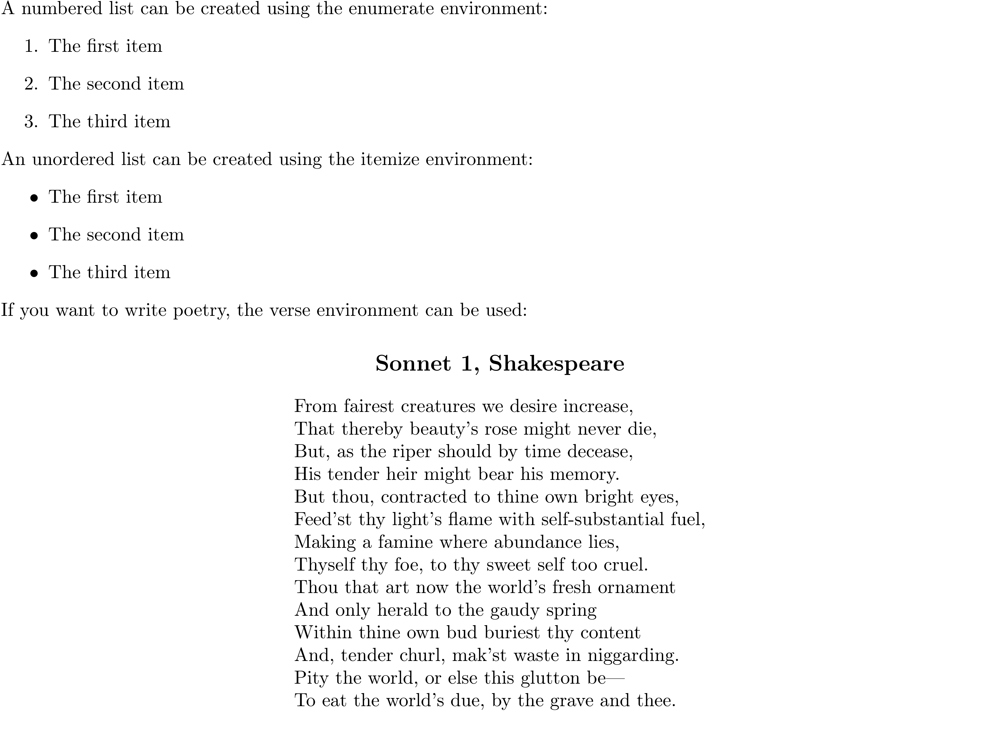
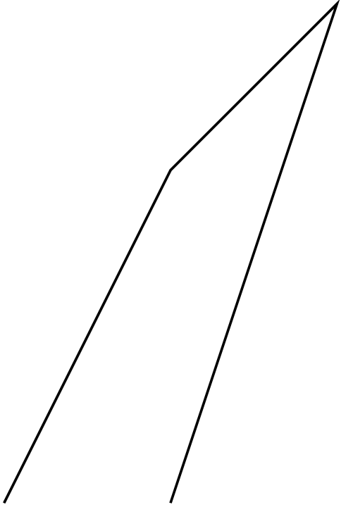
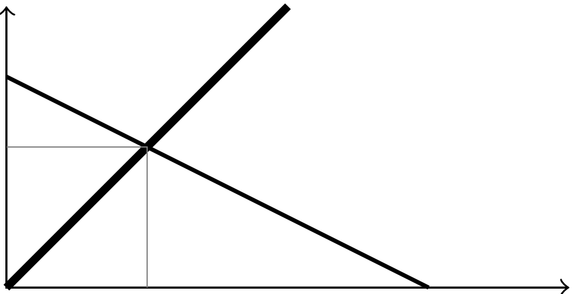
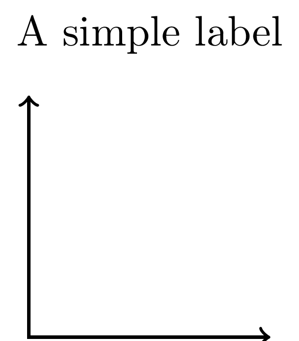
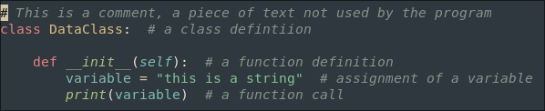
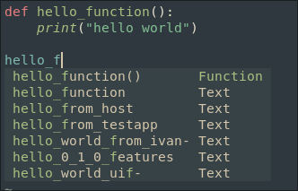
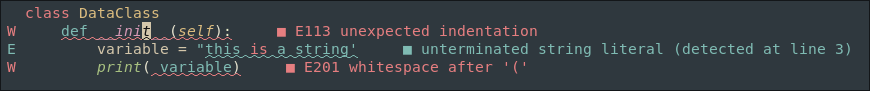

Introduction to LaTeX
Table of Contents
Introduction
LaTeX is a “document preparation system” (LaTeX - a Document Preparation System, n.d.). It
is a program that takes a plain text1 file written in a special
syntax and creates a document, commonly in the PDF format. Rather than display
the formatting in the editor, a la Microsoft Word (Microsoft Word – Word Processing Software | Microsoft 365, n.d.), LaTeX uses a set of codes or
“commands” to determine how the final document will look. Italicized text for
example, would look \emph{like this} in the text file, but like this in the
final document. This document aims to provide a brief introduction in the use of
LaTeX, covering everything from general syntax to document classes.
Prerequisite Knowledge
The following skills are required to read this document successfully:
- English literacy, there will be some jargon
- Computer skills, basic terminology2
- Ability to follow detailed instructions
- Ability to use a text editor3, instructions will be given using Visual Studio Code (VScode)(Visual Studio Code - Code Editing. Redefined, n.d.--a)
- If using Linux, basic terminal knowledge is assumed4
Uses
In the case of Big Publishing CO., we use it for publishing. Authors submit their work in an arbitrary format, which might include handwritten equations, non-standardized fonts, etc. LaTeX provides a way to automate and standardize the formatting of these documents. It is also frequently used by document creators to export to multiple formats without extra work.
A Basic Example
On first glance, LaTeX looks a bit like a [programming language]. For the most part, LaTeX would not be considered a programming language. It is more like HTML (HTML Standard, n.d.) or MediaWiki markup (Help, n.d.). These languages are generally considered Markup languages. Markup languages are much easier to learn in comparison to programming languages. Here is a very short example document in LaTeX:
\documentclass{article} \begin{document} Hello, World! I just wrote my first \LaTeX{} document! \end{document}

This is the standard format for code in this document. Expect output of code blocks directly after code.
Getting Started
There are many different ways to use LaTeX. LaTeX is a program, but it is also a language. LaTeX has been at least partially implemented in many different pieces of software, particularly the math typesetting functionality, which will be covered later.
Installation
In this section, we will cover an overview of the installation of the LaTeX program for every major platform.
Overleaf
One of the easiest methods to get started is to use Overleaf (Overleaf, Online LaTeX Editor, n.d.). Overleaf is an online system that removes much of the hassle of creating documents in LaTeX. Overleaf’s online naturre For professional use, Overleaf is not recommended as data privacy is not assured. This is a problem with all external web based tools. It is great as a learning tool and for personal use however.
Windows
The official recommended way to install LaTeX in Windows is to use the MiKTeX (MikTex, 2022) distribution. Follow the official instructions to install. Make sure the correct version of Windows is installed. Once installed, the program Straberry Perl (Strawberry Perl for Windows, n.d.) must be installed. Assuming that VScode is installed, the LaTeX Workshop extension must be installed through the built in marketplace. LaTeX can now be run through VScode if so desired.
MacOS
The official recommended way to install LaTeX in MacOS is to use the MacTeX distribution(MacTeX - TeX Users Group, n.d.). Follow the official instructions to install. Assuming that VScode is installed, the LaTeX Workshop extension must be installed through the built in marketplace. LaTeX can now be run through VScode if so desired.
Linux (Ubuntu)
For Ubuntu linux, simply running:
sudo apt update sudo apt install texlive-full sudo apt install latexmk
will install the required packages. Assuming that VScode is installed, the LaTeX Workshop extension must be installed through the built in marketplace. LaTeX can now be run through VScode if so desired.
First Document
Copy the code from above into a file called `mydocument.tex` using a text editor.
If using VScode, ctrl + alt + b or Build LaTeX in the command palette should
build the document so that it looks like the output above.
If not using VScode, some terminal knowledge is required. Open a terminal in the
directory where mydocument.tex is located and run:
latexmk mydocument.tex
A document called mydocument.pdf should now appear in the same directory as mydocument.tex.
Latexmk is a special command that automates much of the normal build process (CTAN: Package Latexmk, n.d.).
Basic Syntax
Taking our basic example again:
\documentclass{article} \begin{document} Hello, World! I just wrote my first \LaTeX{} document! \end{document}
LaTeX uses the \ character to demarcate Commands5 from the
rest of the text. {} characters are used to provide arguments to these commands.
The \begin and \end commands are special, they define an
environment. There are many different kinds of environment, but all documents
should contain a document environment. The text before the document environment
forms the “header” of the document. This is where important meta information,
such as font and margins, goes. In our example, the only header information is
the document class which provides formatting defaults such as font, margin, etc.
In this case, the document class is article which is commonly used as a starting
point for more complicated formatting.
A slightly more complicated example:
\documentclass{article} \usepackage{verse} \begin{document} A numbered list can be created using the enumerate environment: \begin{enumerate} \item The first item \item The second item \item The third item \end{enumerate} An unordered list can be created using the itemize environment: \begin{itemize} \item The first item \item The second item \item The third item \end{itemize} If you want to write poetry, the verse environment can be used: \poemtitle{Sonnet 1, Shakespeare} \settowidth{\versewidth}{Feed’st thy light’s flame with self-substantial fuel,} \begin{verse}[\versewidth] From fairest creatures we desire increase, \\ That thereby beauty’s rose might never die, \\ But, as the riper should by time decease, \\ His tender heir might bear his memory. \\ But thou, contracted to thine own bright eyes, \\ Feed’st thy light’s flame with self-substantial fuel, \\ Making a famine where abundance lies, \\ Thyself thy foe, to thy sweet self too cruel. \\ Thou that art now the world’s fresh ornament \\ And only herald to the gaudy spring \\ Within thine own bud buriest thy content \\ And, tender churl, mak’st waste in niggarding. \\ Pity the world, or else this glutton be— \\ To eat the world’s due, by the grave and thee. \\ \end{verse} \end{document}

This example showcases common environments and how they are used. It also shows
the use of a package, verse. Packages provide commands and environments for a
specific purpose. If installed correctly, all packages for LaTeX should already
be installed.
In the verse environment the \\ code is used to indicate a line break. The other commands
relating to poetry are documented by the verse package (CTAN: Package Verse, n.d.).
Math Equations
LaTeX is particularly useful for creating math equations.Many other pieces of software have implemented an editor just for the math functionality of LaTeX.Examples include Microsoft Word, Libreoffice(LibreOffice - Free Office Suite, n.d.) and even an addon for the Google office suite(Auto-LaTeX Equations - Google Workspace Marketplace, n.d.).
Examples
LaTeX comes with an equation environment that can be used to nicely format
equations:
\begin{equation} Z = \int^0_{1}{xdx} \cdot \frac{5}{3}y \end{equation}
There are a lot of new commands here, but note that they can only be used in a
math environment. If math in normal text is desired, one can use the \( \)
commands. This works like so: \(\frac{5}{3}\) -> \(\frac{5}{3}\).
Using the amsmath package(CTAN: Package Amsmath, n.d.) provides different matrix environments that can be used like so:
\begin{equation*} \begin{matrix} 1 & 2 & 3\\ a & b & c \end{matrix} \begin{pmatrix} 1 & 2 & 3\\ a & b & c \end{pmatrix} \begin{bmatrix} 1 & 2 & 3\\ a & b & c \end{bmatrix} \end{equation}
Notice how the equation environment has an *? This removes the Number annotation
on the equation. For more information about Mathematical expressions, please
refer to the Overleaf documentation. There is also this excellent reference from Rice
University.
Figures
LaTeX has the ability to generate figures from text. The most ubiquitous package to do this is pgf, otherwise known as TikZ(CTAN: Package Pgf, n.d.).
Examples
Authors Note: These examples are taken from the linked TikZ manual. I have edited them slightly to better fit this document.
The simplest command in TikZ is \draw. It simply draws a line between points.
\begin{tikzpicture} \draw (0,0) -- (1,2) -- (2,3) -- (1,0); \end{tikzpicture}

In this example, a line is drawn betwen four points resulting in a shape. Lines can take on different shapes, styles, and sizes.
\begin{tikzpicture} \draw [<->] (0,2) -- (0,0) -- (4,0); \draw [thick] (0,1.5) -- (3,0); \draw [ultra thick] (0,0) -- (2,2); \draw [help lines] (1,0) -- (1,1) -- (0,1); \end{tikzpicture}

Most figures need labels, a fact which is handled by TikZ “nodes”.
\begin{tikzpicture} \draw [thick, <->] (0,2) -- (0,0) -- (2,0); \node at (1,2.5) {A simple label}; \end{tikzpicture}

TikZ can take longer to understand, for this reason, reading the manual is recommended.
Extra Resources
These are extra resources for learning LaTeX, they are useful as references, but can be intimidating to new users.
- CTAN, the comprehensive TeX archive network
- Overleaf Tutorials
- LaTeX-Tutorial.com, a great learning resource
References
Glossary
Text Editor
A text editor is a piece of software that facilitates the creation of plain text files (files that do not contain formatting information). Text editors are most often used for computer programming, but can be used for any plain text files, including HTML and LaTeX files.
Common Features of a Text Editor
While the definition of a text editor is simply a piece of software that creates text files, most text editors also contain extra features that make file creation easier.
One of the most ubiquitous features is syntax highlighting; this feature changes the color of specific characters so that the user has an easier time discerning the purpose of the text.

Figure 1: Notice how different pieces of text are highlighted differently? This makes it easier for the document creator to understand.
Another feature commonly found in text editors is auto-complete. Auto-complete will suggest new text based on what is typed. Depending on the implementation, auto-complete may suggest anything from simple words to complex definitions written in other files. Some implementations can even utilize artificial intelligence to make the completions smarter, as is the case with the popular Github Copilot tool (GitHub Copilot · Your AI Pair Programmer, n.d.).

Figure 2: See how auto-complete suggests a function written earlier in the file? Auto-complete will often change the suggestions based on what has already been written.
Text editors also commonly contain an error checkers or linters; this is extremely useful in programming related scenarios because some errors can be hard to spot, even to the untrained eye. Linters can also aid in learning, as they often describe the problem in addition to pointing it out. Linters are not limited to just error, they can also show warnings and style recommendations.

Figure 3: Notice how errors and warnings are differentiated on the left.
Some text editors contain many more features than described here, anything from sending emails to full fledged web browsing.
Examples of Text Editors
Many basic text editors exist, the most famous of which is probably Microsoft’s Notepad. This text editor does not contain any of the features previously described, aiming to be as bare-bones as possible. On the other end of the spectrum, integrated development environments (IDE) aim to pack as many features as possible regarding a specific programming language or tool. Overleaf (Overleaf, Online LaTeX Editor, n.d.) is an online based LaTeX IDE that makes document creation much more intuitive to non-technical audiences.
Some text editors are extensible, meaning that software can be written by third parties to extend, or increase, functionality. Some popular editors in this category are Microsoft’s Visual Studio Code (Visual Studio Code - Code Editing. Redefined, n.d.--b), GNU Emacs(GNU Emacs - GNU Project, n.d.), and Vim (Welcome Home : Vim Online, n.d.). These editors have potentially limitless amounts of features and can be modified to fit a variety of different use cases.
Text editors are often built into other software as well. Blender (Foundation, n.d.), contains a editor for use with its built in Python (a programming language) interpreter. Many web based text editors also exist, such as the Text Editor (Text Editor - Free App for Editing Text Files, n.d.).
Conclusion
Many different text editors exist and support a variety of different features. Some are very basic, some are extensible, and others are simply pieces of other software. They all share the ability to edit plain text, and most contain at least some quality of life improvements for the user, such as syntax highlighting. They are required to write most programming and markup languages.
LaTeX Environments
LaTeX environments provide a way to apply an effect to a region of text. The
verse environment will format the text in a format commonly used for
sonnets(Shakespeare’s Sonnets, Sonnet 1 | the Folger SHAKESPEARE, 2020).
Every document contains a document environment. This environment tells LaTeX how
to differentiate between header information, such as document margins, and the
document body, the actual written content.
For more information about environments, see the Overleaf documentation.
Plain Text
Plain text is text without any formatting information. Plain text is edited in a text editor. LaTeX is written in plain text.
Document Class
LaTeX documents commonly make use of “document classes”. These are a set of instructions that tells LaTeX how to format a document. Custom classes can be created and distributed to provide a standardized format.
An example of a commonly used third party document class would be
apa7(CTAN: Package Apa7, n.d.).This class will
automatically format all the content of a .tex file to fit 7th edition APA style
(APA Style, n.d.). apa7 comes with options to customize the document
as well, allowing the user to select the document type (journal, paper
submission, etc) and customize to their liking.
Footnotes:
“Plain text” refers to text without formatting. Font, margin, and spacing information are all absent. Files containing plain text often end with the .txt extension.
Basic terminology includes terms like “window”, “software”, “webpage”. More complicated terms will either be defined, or an appropriate hyperlink will be used.
A text editor is a piece of software that edits plain text. See the extended definition here.
Basic terminal knowledge includes moving directories(cd command in Unix operating systems) and running commands.
Commands can be pretty advanced and are why LaTeX can sometimes be considered a programming language. Users don’t create them very often.